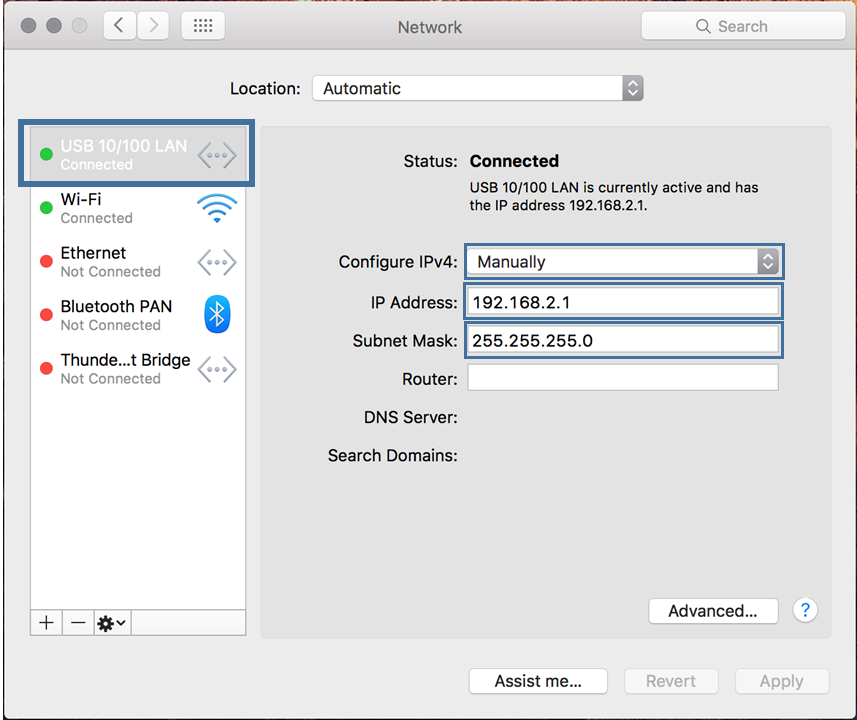
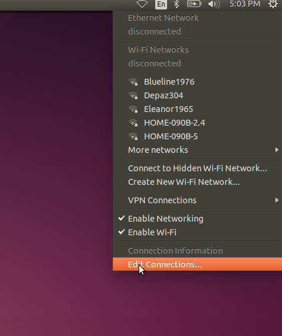
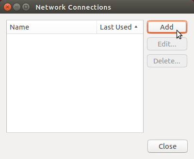

Installation
QGroundControl
Download and install QGroundControl using one of the links below.
Linux needs additional GStreamer dependencies, see the QGroundControl User Guide for details.
ArduSub
Open QGroundControl and navigate to the Firmware tab of the Vehicle Setup page.
Plug in the Pixhawk to the computer's USB port. Once detected, QGroundControl will show a firmware selection box on the right. Choose "ArduPilot Flight Stack", then select "ChibiOS", "Sub", and (assuming you are using a Pixhawk) "Pixhawk1" from the dropdown list.
Press "OK" at the top right. The firmware will upload the Pixhawk and you'll see the following printout and success message. The Pixhawk should start running and get detected by QGroundControl right away.

Raspberry Pi
The Raspberry Pi operating system and supporting software is installed by restoring a pre-configured .img file to the Raspberry Pi SD Card. The Raspberry Pi is referred to as the Companion Computer, and the software that runs on it is referred to collectively as the Companion Software.
- Insert a microSD card with at least 4GB capacity into your computer with a card reader
- Download the Raspberry Pi image here
- While the Raspberry Pi image downloads, download and install Etcher. Make sure you select the correct download for your Operating System!
- Open Etcher, select the Raspberry Pi image file (no need to extract beforehand) and your SD card, click 'Flash' and wait for it to complete
- Eject the SD card, and place it back into the Raspberry Pi
Network Setup
The Companion Computer is assigned a static IP address of 192.168.2.2, and it expects the surface computer to have an IP address of 192.168.2.1. The network configuration on the surface computer needs to be set up before it can communicate with the ROV. Choose your operating system below to display the appropriate network setup instructions.
Windows 10
Go to Control Panel > Network and Sharing Center and then choose "Change adapter settings".
Right click on the Ethernet adapter, then choose Properties.
In the properties dialog, choose Internet Protocol Version 4 (TCP/IPv4), then click Properties.
Select "Use the following IP address" And enter 192.168.2.1 for the IP address and 255.255.255.0 for the Subnet mask. Then select OK.
Firewall
Go to Control Panel > Windows Firewall and then select "Allow an app or feature through Windows Firewall".
Select "Change Settings" and then select "Open source ground control app provided by QGroundControl dev team" or "QGroundControl".
Mac
Go to System Preferences > Network
If your computer has an Ethernet port, select Ethernet from the options on the left side. If you had to get a USB to Ethernet adapter, plug it in now then select it.
Select the dropdown next to "Configure IPv4" and then select "Manually"
Enter 192.168.2.1 for the IP Address and 255.255.255.0 for the Subnet Mask and then select apply.

Linux (Ubuntu 16.04)
Click the Network Icon in the toolbar at the top of the screen, and click "Edit Connections..."

Click "Add"

Select "Ethernet" for the connection type and click "Create..."

From the "Device MAC Address" dropdown, select the ethernet interface you want to use. If you are using the built in ethernet card on your computer, there will be only one choice. If you are using a USB to Ethernet adapter, find out which interface corresponds to the adapter by looking at the options before and after plugging the adapter into the computer.
Click the "IPv4 Settings" tab, and from the "Method" dropdown menu, select "Manual". Click "Add", and enter 192.168.2.1 for the Address, 255.255.255.0 for the Netmask and 0.0.0.0 for the Gateway. Click "Save..." to complete the setup.
Linux (Ubuntu 18.04)
Click on the Wifi icon in the toolbar at the top of the screen. Ubuntu 18.04 saves the profiles of every connection you make. If the pi is connected to the computer via USB to Ethernet convertor, click on "Ethernet Connecting"/"USB Ethernet Connecting." If the pi is connected to the computer directly via an Ethernet Cable, click on "Wired Connecting"/"PCI Ethernet Connecting." From the drop-down menu, select "Wired Settings"
Click on the gear icon next to your connection type.
Go to the "IPv4" tab for the connection type. Select IPv4 Method as "Manual" and enter the address information as shown in the figure. Click "Apply" to complete the setup.
.png)
.png)